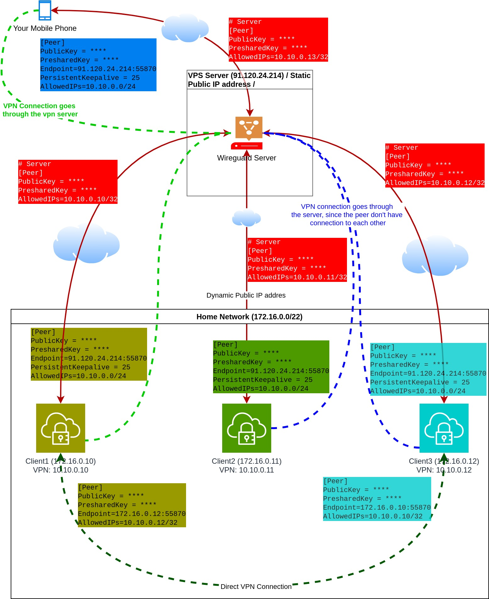
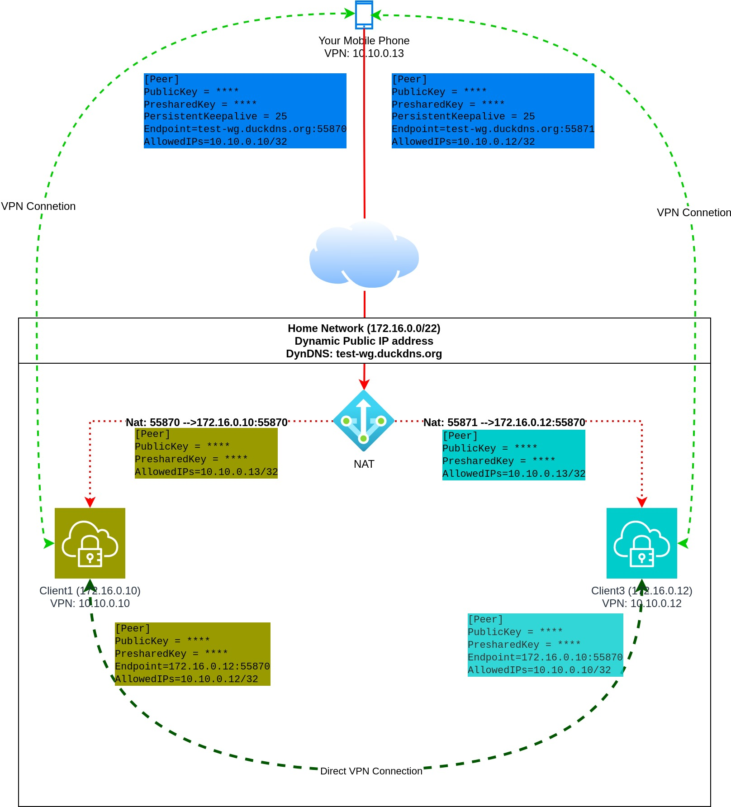
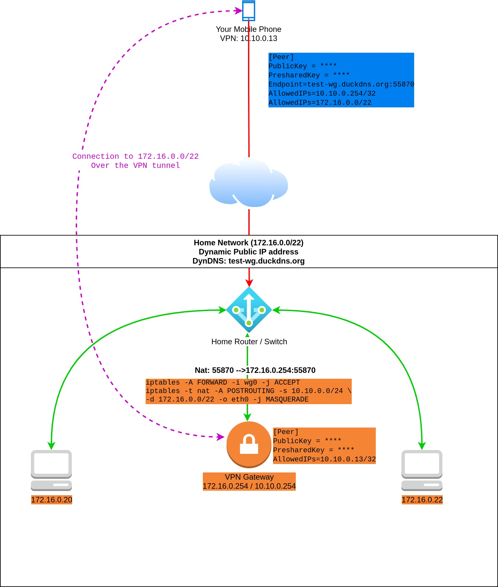

Install And Configure Wireguard VPN¶
Preface¶
I think it is not necessary to emphasize how important you privacy on the public Internet. In the world of high speed internet more and more applications are running at your home, eg.: OpenHab, Plex, Private NAS, etc. People usually want to access these services outside the home network too. It is not recommended to publish these service directly on your public ip address:
- It is becoming more common to use CGN Nat by many internet providers. This situation make it impossible to publish your service on Public IP address, because you won't have any.
- Everybody on the public Internet will have access to your private servers. Hacker can easily find your service and may steal your sensitive data.
- You have to make effort to configure NAT in your router.
- Usually consumer internet providers assign IP address dynamically. In this case you have to choose a dynamic DNS service. One of the best I think is DudkDNS, it is completely free for use. You need to update you ip address somehow (router, shell script, etc.). DuckDNS supports a lot of method to do this.
Not all of above could be eliminated with Wireguard VPN:
- If you don't have static public ip address you still need NAT configuration and DynDNS service.
- With CGN Nat it is still impossible to get into your home network.
If you are looking for a really zero-configuration VPN solution your best option may be Tailscale. It can be easily installed on any popular platforms (Linux, Mac, Windows, Android or IOS).
If you are interested in how Tailscale solve the NAT and dynamic IP problems you should read this article: https://tailscale.com/blog/how-nat-traversal-works/. And the best: it's completely free up to 20 devices.
But this article is not about Tailscale, but Wireguard.
Install Wireguard¶
Quote
WireGuard® is an extremely simple yet fast and modern VPN that utilizes state-of-the-art cryptography. It aims to be faster, simpler, leaner, and more useful than IPsec, while avoiding the massive headache. It intends to be considerably more performant than OpenVPN. WireGuard is designed as a general purpose VPN for running on embedded interfaces and super computers alike, fit for many different circumstances. Initially released for the Linux kernel, it is now cross-platform (Windows, macOS, BSD, iOS, Android) and widely deployable. It is currently under heavy development, but already it might be regarded as the most secure, easiest to use, and simplest VPN solution in the industry.
Official Web Page: https://www.wireguard.com/install/
The install process is the same as Server or Client, but WireGuard is a decentralized VPN solution so there is no classic Server-Client terminology as in case of example OpenVPN.
I have VPS server with static and public IP address. This machine will be the "Server". Unfortunately lack of at least one static ip address makes the situation complicated, and there is no overall (magic) solution. So later in this article it is assumed that you have at least one public, static ip address. I'm going to highlight how can you partially solve the lack of the public ip, but everything is only Workaround and solve the problems only partially.
Install Wireguard:
apt-get install wireguard wireguard-tools qrencode
Warning
Users with Debian releases older than Bullseye should enable backports.
You may want to check the official install doc if you have another system than Debian based OS: https://www.wireguard.com/install/
Configure The Server¶
- Private Key
export PRIVATE_KEY=$( wg genkey )
- Public Key
export PUBLIC_KEY=$( echo $PRIVATE_KEY | wg pubkey )
Now you have to choose a public IP address range which never will overlap any of your existing network. Example: 10.9.0.0/24
- Create The Interface Configuration file
/etc/wireguard/wg0.conf
cat <<EOF>/etc/wireguard/wg0.conf
# PubKey: $PUBLIC_KEY
[Interface]
Address = 10.9.0.1/32
ListenPort = 51820
PrivateKey = $PRIVATE_KEY
EOF
- Start the VPN Server
systemctl enable wg-quick@wg0
systemctl start wg-quick@wg0
- Check The Interface
ifconfig wg0
wg0: flags=209 mtu 1420
inet 10.9.0.1 netmask 255.255.255.255 destination 10.9.0.1
unspec 00-00-00-00-00-00-00-00-00-00-00-00-00-00-00-00 txqueuelen 1000 (UNSPEC)
RX packets 0 bytes 0 (0.0 B)
RX errors 0 dropped 0 overruns 0 frame 0
TX packets 0 bytes 0 (0.0 B)
TX errors 0 dropped 0 overruns 0 carrier 0 collisions 0
Create Peer (Client) Config¶
Collect Things We Need¶
# Private Key (Client)
wg genkey
iEypOx3Xt5HE++e5I5udO8oJ+bArSoEXqK3XvuvFeXo=
# Public Key (Client)
echo "iEypOx3Xt5HE++e5I5udO8oJ+bArSoEXqK3XvuvFeXo=" | wg pubkey
k6k5GnW3+JJSmzCqEQzkZyFyg7OFO3RhiXhSXur5tFI=
# The Public Key Of the Server
cat /etc/wireguard/wg0.conf | tr -d ' ' | grep -oP '(?<=PrivateKey=).*[^$]' | wg pubkey
TSXemmthLlXp8gsLSTfcmqgjolvYWmppNhIUeppg/CU=
# Preshared Key
wg genpsk
Samqdyf9gVcfEUPCS52I1hJCLMlXAmHoitk1l5y9UO0=Peer Config File:
[Interface]
Address = 10.9.0.2/24
ListenPort = 51820
PrivateKey = iEypOx3Xt5HE++e5I5udO8oJ+bArSoEXqK3XvuvFeXo=
[Peer]
PublicKey = TSXemmthLlXp8gsLSTfcmqgjolvYWmppNhIUeppg/CU=
PresharedKey = Samqdyf9gVcfEUPCS52I1hJCLMlXAmHoitk1l5y9UO0=
EndPoint=172.16.1.214:51820
PersistentKeepalive = 25
AllowedIPs = 10.9.0.0/24
This file should be saved on your client (/etc/wireguard/wg0.conf).
Or save it to a file (01.conf) and generate QR code for you Android or IOS client:
qrencode -t ansiutf8 <01.conf
Before you start using your client you need to update your Wireguard Server. Add these lines:
cat <<EOF>>/etc/wireguard/wg0.conf
[Peer]
PublicKey = k6k5GnW3+JJSmzCqEQzkZyFyg7OFO3RhiXhSXur5tFI=
PresharedKey = Samqdyf9gVcfEUPCS52I1hJCLMlXAmHoitk1l5y9UO0=
PersistentKeepalive = 25
AllowedIPs = 10.9.0.2/32
EOF
- Reload The Server Config (Without Interrupting Connections)
wg syncconf wg0 <(wg-quick strip wg0)
Peer Configs¶
At fist sight it could be confusing, but if you look closer I hope will understand the configs.
- PrivateKey: Should never shared. Unique across all peers and appear only in
[interface]section. - PublicKey: Generated from
PrivateKey.- Should shared across peers.
- Peer1 gets the PublicKey of Peer2, and vice versa,
- Peer2 gets the PublicKey of Peer1.
- PresharedKey: Should be the same between two peers.
- Peer1 and Peer2 use the same PresharedKey1,
- Peer2 and Peer3 use the same PresharedKey2,
- Peer1 and Peer3 use the same PresharedKey3.
- This assumes that all of these three peers connected each other (decentralized connection), and there will be three different PresharedKey.
I try to explain through the following schema of [peer] configs. Only The keys are mentioned. Interface configs are always unique, does not have common parts.
Peer1 Config
[Peer]
PublicKey = Public Key Of Peer 2 (echo [PRIVATE_KEY OF PEER2] | wg pubkey)
PresharedKey = Shared Key12
[Peer]
PublicKey = Public Key Of peer 3 (echo [PRIVATE_KEY OF PEER3] | wg pubkey)
PresharedKey = Shared Key13
Peer2 Config
[Peer]
PublicKey = Public Key Of Peer 1 (echo [PRIVATE_KEY OF PEER1] | wg pubkey)
PresharedKey = Shared Key12
[Peer]
PublicKey = Public Key Of peer 3 (echo [PRIVATE_KEY OF PEER3] | wg pubkey)
PresharedKey = Shared Key23
Peer3 Config
[Peer]
PublicKey = Public Key Of Peer 1 (echo [PRIVATE_KEY OF PEER1] | wg pubkey)
PresharedKey = Shared Key13
[Peer]
PublicKey = Public Key Of peer 2 (echo [PRIVATE_KEY OF PEER2] | wg pubkey)
PresharedKey = Shared Key23
EndPoint¶
One out of two peers have to know where to find the other.
| ID | Peer1 Know Peer2 IP adddress | Peer2 Know Peer1 IP adddress | Comment |
|---|---|---|---|
| 1 | yes | yes | Best Situation. PersistentKeepalive is not needed. |
| 2 | yes | no | Good Situation. PersistentKeepalive should be set on Peer1. |
| 3 | no | yes | Good Situation. PersistentKeepalive should be set on Peer2. |
| 4 | no | no | Worst Situation. No Connection could be made. |
- First Situation
This the best scenario. Both clients have its own static public ip address. You can configure the Endpoint each side to point each other.
- Second And Third Situation
You have at least one peer - the server(s) - with static public IP address, and one or more clients. The Endpoint configuration on all clients the same and points to the server' IP address and port.
On the server side you should not use any Endpoint declaration for the Clients.
- Worst Situation
In this scenario all of your peers are behind NAT or CNG Nat. Example of 2 peers:
The first peer is behind NAT in your home (private) network. You have port forwarding, firewall and dynamic DNS set up.
The second peer is your mobile phone with mobile internet.
In your configuration of the first peer you can not specify anything as Endpoint, since you don't know the always actual ip address of you mobile phone.
In the configuration of your mobile client you can specify your DynDNS host name (eg.: test-wg.duckdns.org).
The problem here: If your public IP address (to which the DynDns provider points to) changes you have to restart the Wireguard client on your mobile phone. If you can live together with this limitation Wireguard will work fine in this kind of setup.
BUT! If the first peer behind CGN Nat, you don't have any option to get Wireguard works. If you can not specify at least one Enpoint, Wireguard just won't work.
If you want to read about how Tailscale solve this kind of issue click on this link: https://tailscale.com/blog/how-nat-traversal-works/
Direct Connection Matrix:
| Connect FROM \ TO | Server Peer (91.12.21.142) | Peer2 (inside priv net) | Peer3 (inside priv net) |
|---|---|---|---|
| Server Peer (91.12.21.142) | X | Doesn't know peer2 address | Doesn't know peer3 address |
| Peer2 (inside priv net) | EndPoint: 91.12.21.142:51820 PersistentKeepalive = 25 |
X | No Ip addresses is known |
| Peer3 (inside priv net) | EndPoint: 91.12.21.142:51820 PersistentKeepalive = 25 |
No Ip addresses is known | X |
- Server Peer (91.12.21.142) Has Static Public IP address (91.12.21.142)
- When you configure peers on the server side usually no
EndPointand norPersistentKeepaliveis set up.
- When you configure peers on the server side usually no
- Peer2 (inside priv net) AND Peer3 (inside priv net) are behind NAT. (Home network or your phone/tablet with mobile internet)
- In the clients configuration we specify where to find the Server (
EndPoint) andPersistentKeepaliveto update its ip address periodically.
- In the clients configuration we specify where to find the Server (
Info
The mentioned EndPoint and PersistentKeepalive settings go to the clients config not to the server's one.
As we discussed earlier general peers may be behind CGN NAT, or inside your home network, or even could be your mobile phone with mobile internet connection. These peers don't have static, public IP addresses. Of course you can open port on your firewall and set up NAT, use dynamic DNS, etc., but Wireguard check DNS record only when it starts. Every time your router gets a new public ip address you should trigger Wireguard restart.
This situation could not be solved easily, and this is where Tailscale comes to the picture. If all of your peers are behind NAT you should use Tailscale instead of Wireguard. You probably won't find any other good and stable solution.
Summarize¶
Now we have a server and a client configuration:
- Server
[Interface]
Address = 10.9.0.1/32
ListenPort = 51820
PrivateKey = oMQf0fLAvnIoiLr+z4zmOlETxA0eR/Z7oPHhXRpQoEY=
[Peer]
PublicKey = k6k5GnW3+JJSmzCqEQzkZyFyg7OFO3RhiXhSXur5tFI=
PresharedKey = Samqdyf9gVcfEUPCS52I1hJCLMlXAmHoitk1l5y9UO0=
PersistentKeepalive = 25
AllowedIPs = 10.9.0.2/32
- Client
[Interface]
Address = 10.9.0.2/24
ListenPort = 51820
PrivateKey = iEypOx3Xt5HE++e5I5udO8oJ+bArSoEXqK3XvuvFeXo=
[Peer]
PublicKey = TSXemmthLlXp8gsLSTfcmqgjolvYWmppNhIUeppg/CU=
PresharedKey = Samqdyf9gVcfEUPCS52I1hJCLMlXAmHoitk1l5y9UO0=
EndPoint=172.16.1.214:51820
PersistentKeepalive = 25
AllowedIPs = 10.9.0.0/24
We haven't talk about two important things:
Interface/Address
Quote
The Address setting is the virtual address of the local WireGuard peer. It’s the IP address of the virtual network interface that WireGuard sets up for the peer; and as such you can set it to whatever you want (whatever makes sense for the virtual WireGuard network you’re building).
Like with other network interfaces, the IP address for a WireGuard interface is defined with a network prefix, which tells the local host what other IP addresses are available on the same virtual subnet as the interface. In the above example, this prefix is /32 (which generally is a safe default for a WireGuard interface). If we set it to /24, that would indicate to the local host that other addresses in the same /24 block as the address itself (10.0.0.0 to 10.0.0.255) are routable through the interface.
Peer/AllowedIPs
Quote
Is the set of IP addresses the local host should route to the remote peer through the WireGuard tunnel. This setting tells the local host what goes in tunnel.
Example: AllowedIPs = 10.8.0.0/24,192.168.100.0/24
Basically this means that traffic to 10.8.0.0/24 and 192.168.100.0/24 is routed to the wg0 interface (route command):
Kernel IP routing table
Destination Gateway Genmask Flags Metric Ref Use Iface
default _gateway 0.0.0.0 UG 100 0 0 eth0
10.8.0.0 0.0.0.0 255.255.255.0 U 0 0 0 wg0
....
....
192.168.100.0 0.0.0.0 255.255.255.0 U 0 0 0 wg0
Read more:
- https://stackoverflow.com/questions/65444747/what-is-the-difference-between-endpoint-and-allowedips-fields-in-wireguard-confi
- https://www.procustodibus.com/blog/2021/01/wireguard-endpoints-and-ip-addresses/
Topology Examples¶
WireGuard Server¶

- Match the colors: Config and the element have the same color. Example green peer config text goes to the green client.
- The "Cloud" pictogram means the public Internet.
- VPN and physical connections are separately shown in the pictures. VPN connections are indicated by dashed lines.
- The WireGuard server sitting on a VPS. This VPS has static, public IP address.
- All (4) peers connect to this WireGuard Server.
- WireGuard Server don't have EndPoint configurations to the peers, since the IP addresses are not known of the peers. Therefore
PersistentKeepAliveis not necessary.
- WireGuard Server don't have EndPoint configurations to the peers, since the IP addresses are not known of the peers. Therefore
- Peers have
PersistentKeepAliveset to 25 seconds. This means all peer update its EndPoint on the ServerSide. - Peer configurations between Client1 and Client3 have no
PersistentKeepAliveset up, because they know each other IP addresses. - Client1 and Client3 have direct VPN connection to each other.
- Client1 has 2 peer configured:
- Connection to the server
- Connection to Client3
- Client3 has 2 peer configured
- Connection to the server
- Connection to Client1
- Client2 has one peer configured: to the Wireguard Server.
- "Your mobile phone" has only one peer configured, to the WireGuard server.
- The mobile cient access other peers over the WireGuard server.
- Mobile clients can access the others on their VPN IP address (10.10.0.0/24)
- If the WireGuard server fails your mobule cient lose connection to all peers. Only Client1 and Client3 can access each other over the VPN without the server.
- The connection between Client2 and Client3 or Client2 and Client1 goes through the server.
- This setup works even when your private home network is behind CGN NAT.
Disatvantages:
- You need a server on the public internet (VPS). There are a lot of cheap VPS provider, so if you willing to pay for a VPS you can easily find one even under $5. (Be carefully, most VPS provider limit the bandwidth.)
Tip
Connection could work without PersistentKeepAlive as well. BUT, the tunnel will only be establish after the client send at least one package to the other peer.
Dynamic DNS¶

- Network Address Translation is set on your home router
- Incomming connection to 55870 goes to Client1
- Incomming connection to 55871 goes to Client3
- You must configure a Duckdns client to update the ip address of test-wg.duckdns.org.
- The mobile clint has (peer) configuration to Client1 and Client3.
- Client1 and Client3 have direct peer configuration.
Endpointmust set on the mobile client. Mobile client knows where to find the other peers, but the other clients don't know the IP address of the mobile client.PersistentKeepalive is optional but recommended.
Disatvantages:
- If your public IP address changes you have to manually restart your mobile WG Client.
- You have to configure NAT and DynDNS provider.
- Won't work if you are behind CGN NAT.
Wireguard Gateway¶

- Moblie client can access the entire private home network through the VPN gateway.
- This means that traffic from the mobile client to the
172.16.0.0/22first goes to the WG Gateway over the VPN tunnel. After theiptablesrule (masquerade) applied the package reaches the target machine via the physical home network. - Flow:
Mobile Client (wg:10.10.0.13) --> (wg0:10.10.0.254) Wireguard Gateway (eth0:172.16.0.254) --> (eth0:172.16.0.22) Machine
- This means that traffic from the mobile client to the
- Similar to the previous scenario, except you don't need to install WG on all your internal device which you want to access.
Disatvantages:
- All of them which is included in the previous scenario.
- You should carefully set up iptables. In this example the entire home network is open to the mobile client.
- Machines inside your home network without WireGuard don't access the VPN network without extra configuration.
- This means you have to configure the routing table in your router to send traffic to the VPN gateway.
- Or add route to the routing table of all machines from where you want to access VPN ip addresses.
- Extra iptalbes rules also have to be added to the VPN gateway.
Generate Peer Config Using Bash Script¶
First let see the script:
Configuration¶
- This script generate only the clients configurations, the server config must be manually created.
- Put this script to
/etc/wireguard/clientson the VPN server and run it from this directory (./script-name.sh). - Modify line 3 to change your VPN IP address range. Only
/24is supported! - Initialize the first client IP address by running
echo -n 2 >/etc/wireguard/clients/ip.txtcommand. - Change Line 14 and 15 to set up the default IP address of the VPN server.
- Optional settings:
- Line 23 (Interface/Address): You can change the subnet bits (default:
/32). - Line 25 : Change the listen port of the client, if you don't like the
51820.
- Line 23 (Interface/Address): You can change the subnet bits (default:
Caution
Do not forget to enable Linux IP forwarding! Check: cat /proc/sys/net/ipv4/ip_forward
Enable: sysctl -w net.ipv4.ip_forward=1
Apply the change: sysctl -p
Generate The Server Config¶
cat <<EOF>/tmp/wg0.conf
[Interface]
Address = 10.8.0.2/32
ListenPort = 51820
PrivateKey = $( wg genkey )
DNS = 1.1.1.1
EOF
Copy wg0.conf to the default config directory.
cp /tmp/wg0.conf /etc/wireguard
Generate Your First Peer¶
cd /etc/wireguard/clients
./generate.sh
Config Name (peername): test-peer01
Endpoint (leave blank for 232.188.60.51:51820):
# Here comes the QR Code
==================== wg0 config change: ====================
[Peer] # Config File: test-peer01.conf
PublicKey = ob1**********QqyiwM8YxQv/1JHqP+pN7lK/QSegxc=
PresharedKey = ICU35s/KULp3j8iP**********Nn6TLvrvFaefKez68=
PersistentKeepalive = 25
AllowedIPs = 10.8.0.28/32
==================== Client Config ====================
#:ob1**********QqyiwM8YxQv/1JHqP+pN7lK/QSegxc=,10.8.0.28,test-peer01
[Interface]
Address = 10.8.0.28/32
ListenPort = 51820
PrivateKey = iDtl*********t8pKVxWeVGlcG3h27/w/stjHvUg1o=
#DNS = 1.1.1.1
[Peer]
PublicKey = qanM0i7p**********E/cvw0LDvN0UdW9VaxuBfRIn4=
PresharedKey = ICU35s/KULp3j8iP**********Nn6TLvrvFaefKez68=
EndPoint=23.88.60.51:51820
PersistentKeepalive = 25
AllowedIPs = 10.8.0.0/24
Run command to reload Wireguard:
wg syncconf wg0 <(wg-quick strip wg0)- The script will generate QR code for mobile client, and the config file:
test-peer01.conf- You should use the generated config file or copy-paste from the script output.
- If you want to use mobile device (android or ios), use the generated QR code. You can regenerate this code with
qrencode -t ansiutf8 <test-peer01.confcommand.
- The script doesn't automatically update the server
wg0.conffile.- You have to manually add the "wg0 config change:" section to the server config (
wg0.conf). - It you want to apply the changes without interrupt the existing connection run the
wg syncconf wg0 <(wg-quick strip wg0)command.
- You have to manually add the "wg0 config change:" section to the server config (
This little script is suitable only for managing few nodes, and may help to understand how Wireguard works. Writing an overall configuration manager was not my goal. If you don't like my script never mind, there are a lot of alternatives out there:
- Wireguard-manager
- wg-gui
- subspace
- wg-manager
- mistborn
- Read more: https://medium.com/swlh/web-uis-for-wireguard-that-make-configuration-easier-e104710fa7bd
Summary¶
Maybe this article a bit long, and you get discouraged, because Wireguard looks so complicated, but it doesn't. That's why I copy here a complete example with 3 peers. All peers are in the same private network, but if you get familiar with Wireguard and understand the configuration you can adopt these examples in your network.
Peer Interface Configs¶
Before you run these snippets don't forget to modify the followings:
Interface / Address: The desired VPN IP address of the peers. You can change the subnet bit to/32.Interface / ListenPort: (Optional) On which port should the Wireguard service listenPeer / EndPoint: The actual IP address of the peer in the existing network. (If you have modified the port don't forget to match to it.)Peer /AllowedIPs: Since all peer connect to each other you have to set AllowedIPS to the VPN address of the peers. If you set to other than/32all traffic to this subnet tries to go through the peer.Interface / DNS: You can delete these lines.
Peer1
cat <<EOF>/tmp/peer1-interface.conf
[Interface]
Address = 10.22.0.2/24
ListenPort = 55321
PrivateKey = $( wg genkey )
DNS = 1.1.1.1
EOF
Peer2
cat <<EOF>/tmp/peer2-interface.conf
[Interface]
Address = 10.22.0.3/24
ListenPort = 55321
PrivateKey = $( wg genkey )
DNS = 1.1.1.1
EOF
Peer3
cat <<EOF>/tmp/peer3-interface.conf
[Interface]
Address = 10.22.0.4/24
ListenPort = 55321
PrivateKey = $( wg genkey )
DNS = 1.1.1.1
EOF
Peer Configs¶
Preshared Keys
export PRESHARED_12=$( wg genpsk )
export PRESHARED_13=$( wg genpsk )
export PRESHARED_23=$( wg genpsk )
PRESHARED_12--> Connection between peer 1 and 2PRESHARED_13--> Connection between peer 1 and 3PRESHARED_23--> Connection between peer 2 and 3
| FROM \ TO | Peer1 | Peer2 | Peer3 |
|---|---|---|---|
| Peer1 | X | PRESHARED_12 | PRESHARED_13 |
| Peer2 | PRESHARED_12 | X | PRESHARED_23 |
| Peer3 | PRESHARED_13 | PRESHARED_23 | X |
Endpoints
| FROM \ TO | Peer1 | Peer2 | Peer3 |
|---|---|---|---|
| Peer1 | X | 172.17.0.1:55321 | 172.16.0.27:55321 |
| Peer2 | 172.16.1.213:55321 | X | 172.16.0.27:55321 |
| Peer3 | 172.16.1.213:55321 | 172.17.0.1:55321 | X |
AllowedIPs
| FROM \ TO | Peer1 | Peer2 | Peer3 |
|---|---|---|---|
| Peer1 | X | 10.22.0.3/32 | 10.22.0.4/32 |
| Peer2 | 10.22.0.2/32 | X | 10.22.0.4/32 |
| Peer3 | 10.22.0.2/32 | 10.22.0.2/32 | X |
Info
You can skip the usage of the pre-shared key. It adds extra security, but not mandatory.
Peer1
export PUBLIC_KEY=$( cat /tmp/peer1-interface.conf | tr -d ' ' | grep -oP '(?<=PrivateKey=).*[^$]' | wg pubkey )
cat <<EOF | tee -a /tmp/peer2-interface.conf
# Connection to Peer1
[Peer]
PublicKey = $PUBLIC_KEY
PresharedKey = $PRESHARED_12
EndPoint=172.16.1.213:55321
#PersistentKeepalive = 25
AllowedIPs = 10.22.0.2/32
EOF
cat <<EOF | tee -a /tmp/peer3-interface.conf
# Connection to Peer1
[Peer]
PublicKey = $PUBLIC_KEY
PresharedKey = $PRESHARED_13
EndPoint=172.16.1.213:55321
#PersistentKeepalive = 25
AllowedIPs = 10.22.0.2/32
EOF
Peer2
export PUBLIC_KEY=$( cat /tmp/peer2-interface.conf | tr -d ' ' | grep -oP '(?<=PrivateKey=).*[^$]' | wg pubkey )
cat <<EOF | tee -a /tmp/peer1-interface.conf
# Connection to Peer2
[Peer]
PublicKey = $PUBLIC_KEY
PresharedKey = $PRESHARED_12
EndPoint=172.17.0.1:55321
#PersistentKeepalive = 25
AllowedIPs = 10.22.0.3/32
EOF
cat <<EOF | tee -a /tmp/peer3-interface.conf
# Connection to Peer2
[Peer]
PublicKey = $PUBLIC_KEY
PresharedKey = $PRESHARED_23
EndPoint=172.17.0.1:55321
#PersistentKeepalive = 25
AllowedIPs = 10.22.0.3/32
EOF
Peer3
export PUBLIC_KEY=$( cat /tmp/peer3-interface.conf | tr -d ' ' | grep -oP '(?<=PrivateKey=).*[^$]' | wg pubkey )
cat <<EOF | tee -a /tmp/peer1-interface.conf
# Connection to Peer3
[Peer]
PublicKey = $PUBLIC_KEY
PresharedKey = $PRESHARED_13
EndPoint=172.16.0.27:55321
#PersistentKeepalive = 25
AllowedIPs = 10.22.0.4/32
EOF
cat <<EOF | tee -a /tmp/peer2-interface.conf
# Connection to Peer3
[Peer]
PublicKey = $PUBLIC_KEY
PresharedKey = $PRESHARED_23
EndPoint=172.16.0.27:55321
#PersistentKeepalive = 25
AllowedIPs = 10.22.0.4/32
EOF
We have 3 files created:
-rw-r--r-- 1 root root 578 Oct 19 20:01 peer1-interface.conf
-rw-r--r-- 1 root root 580 Oct 19 20:01 peer2-interface.conf
-rw-r--r-- 1 root root 580 Oct 19 20:01 peer3-interface.conf
peer1-interface.confgoes to/etc/wireguard/wg1.confon peer1peer2-interface.confgoes to/etc/wireguard/wg1.confon peer2peer3-interface.confgoes to/etc/wireguard/wg1.confon peer3
Run on all peers
sysctl -w net.ipv4.ip_forward=1
sysctl -p
systemctl enable wg-quick@wg1
systemctl start wg-quick@wg1